Code gallery
计算方法与代码库
207 个完整、可运行的 Python 示例，按知识领域与专题组织。每个示例给出输入数据格式、关键参数、代码、输出图与解读，可在浏览器中直接运行，也可以下载为 Jupyter Notebook。
Setup本地环境
Python 3.10 及以上：pip install networkx numpy scipy pandas matplotlib jupyterlab；脑网络另装 nilearn bctpy；症状网络可用 R 的 qgraph、bootnet。画图出现中文方框时，在代码开头加 plt.rcParams["font.sans-serif"] = ["PingFang SC", "Microsoft YaHei", "SimHei"]。
Network Foundations网络基础理论
复杂系统与网络的数学表示
 哥尼斯堡七桥问题与欧拉路径
哥尼斯堡七桥问题与欧拉路径 从边列表构造邻接矩阵
从边列表构造邻接矩阵 有向网络的入度与出度
有向网络的入度与出度 二分网络的投影——药物–靶点到药物–药物
二分网络的投影——药物–靶点到药物–药物 邻接矩阵的乘方——游走、共同邻居与三角形
邻接矩阵的乘方——游走、共同邻居与三角形 关联矩阵、度矩阵与拉普拉斯矩阵
关联矩阵、度矩阵与拉普拉斯矩阵 稀疏存储——边列表、CSR 与稠密矩阵的内存比较
稀疏存储——边列表、CSR 与稠密矩阵的内存比较边列表文件内容: TP53 MDM2 0.999 TP53 CHEK2 0.98 GraphML 文件前 6 行: <?xml version='1.0' encoding='utf-8'?> <graphml xmlns="http://graphml.graphdrawing.org/xmlns" xmlns:xsi="http://www.w3.org/2001/XMLSchema-instance" xsi:schemaLocation="http://graphml.graphdrawing.org/xmlns http://graphml.graphdrawing.org/xmlns/1.0/graphml.xsd"> <key id="d1" for="edge" attr.name="score" attr.type="double" /> <key id="d0" for="node" attr.name="kind" attr.type="string" />网络文件格式——边列表、GML 与 GraphML 的读写差异
 符号网络与结构平衡
符号网络与结构平衡 多层网络的超邻接矩阵与超图的表示
多层网络的超邻接矩阵与超图的表示 用欧拉路径做 de Bruijn 图序列组装，并核对几条图论基本定理
用欧拉路径做 de Bruijn 图序列组装，并核对几条图论基本定理网络结构指标与随机图
 度、平均度、密度与度分布
度、平均度、密度与度分布 用广度优先搜索（BFS）求最短路径距离
用广度优先搜索（BFS）求最短路径距离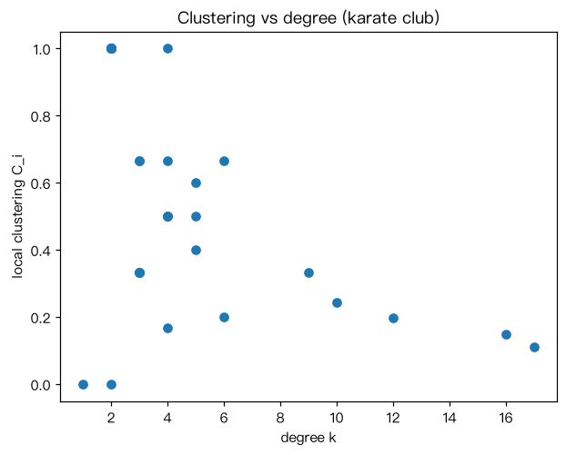
局部聚集系数、平均聚集系数与传递性 全局效率与局部效率
全局效率与局部效率 加权网络的强度、加权聚集系数与加权最短路径
加权网络的强度、加权聚集系数与加权最短路径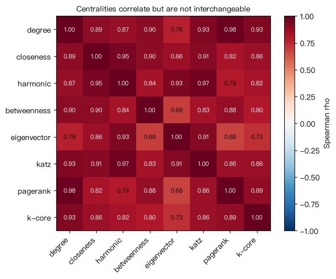
中心性家族在同一网络上的比较 用 Brandes 算法手工计算介数中心性
用 Brandes 算法手工计算介数中心性 特征向量、Katz、PageRank 与 HITS 的幂迭代实现
特征向量、Katz、PageRank 与 HITS 的幂迭代实现 k 核分解（逐层剥离）
k 核分解（逐层剥离）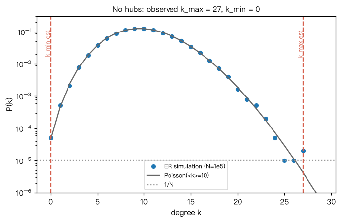
ER 网络的最大度与最小度（自然截断）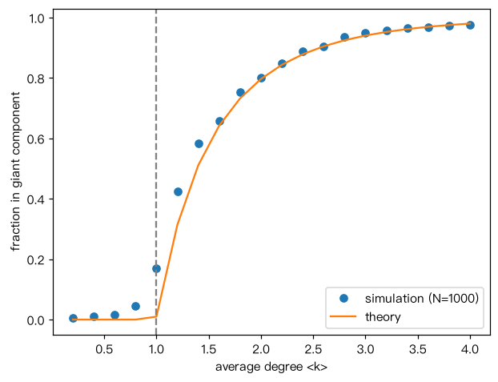
ER 随机网络中巨连通分支的涌现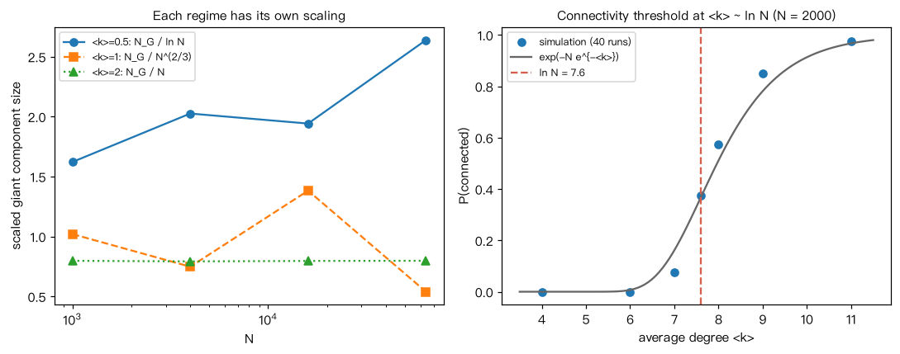
ER 网络演化的四个区间 临界点处的分支大小分布 p_s ~ s^{-3/2}
临界点处的分支大小分布 p_s ~ s^{-3/2} ER 网络平均距离随 N 的对数增长
ER 网络平均距离随 N 的对数增长 真实网络与同规模 ER 网络的比较
真实网络与同规模 ER 网络的比较


社团结构与社区发现
 按定义计算模块度
按定义计算模块度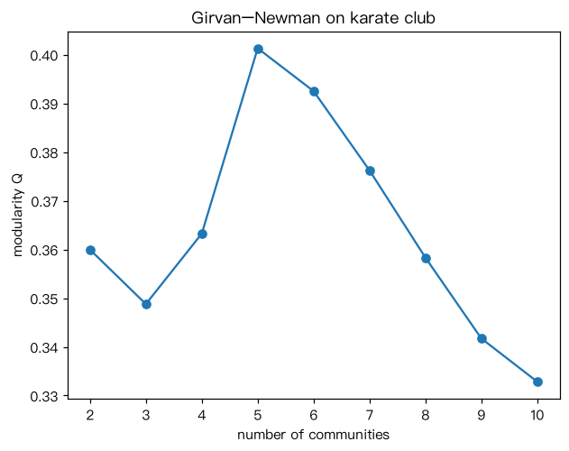
Girvan–Newman 算法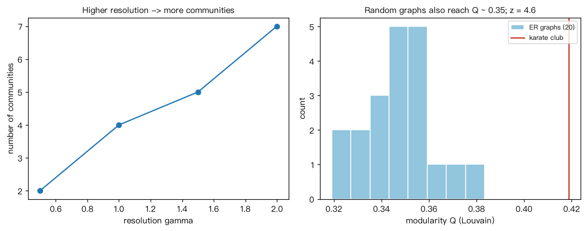
Louvain、分辨率参数与随机网络的模块度 谱方法——模块度矩阵的主特征向量
谱方法——模块度矩阵的主特征向量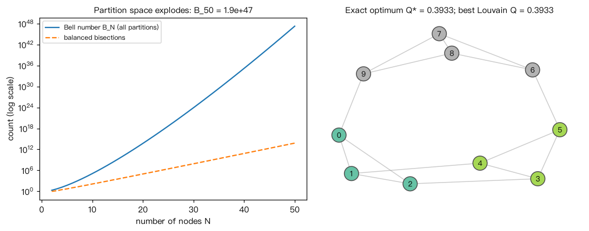
划分空间有多大——Bell 数与小网络上的穷举最优模块度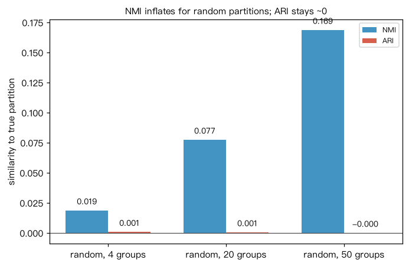
划分之间的比较——NMI、ARI 与信息变差（VI） 随机块模型与可检测性阈值
随机块模型与可检测性阈值 标准 SBM 与度修正 SBM（DC-SBM）在空手道网络上的最大似然划分
标准 SBM 与度修正 SBM（DC-SBM）在空手道网络上的最大似然划分 Infomap 的目标函数——两层映射方程（map equation）
Infomap 的目标函数——两层映射方程（map equation） Leiden 算法、连通性检查与常数 Potts 模型（CPM）
Leiden 算法、连通性检查与常数 Potts 模型（CPM）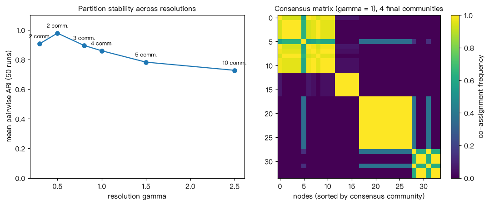
多分辨率扫描与共识聚类 LFR 基准网络上的算法比较
LFR 基准网络上的算法比较 节点在社团中的角色——模块内度 z 分数与参与系数 P
节点在社团中的角色——模块内度 z 分数与参与系数 P 重叠社团——团渗流（CFinder）与连边聚类（link communities）
重叠社团——团渗流（CFinder）与连边聚类（link communities） 时变网络的多层模块度与节点灵活性
时变网络的多层模块度与节点灵活性度相关性与网络结构的高阶统计
 按定义手算度相关系数 r 与 k_nn(k)，并与 NetworkX 对照
按定义手算度相关系数 r 与 k_nn(k)，并与 NetworkX 对照 k_nn(k)、相关指数 mu、r 与 Spearman rho——三类网络对照
k_nn(k)、相关指数 mu、r 与 Spearman rho——三类网络对照 结构截断与“伪异配”——简单图约束本身就会产生负的 r
结构截断与“伪异配”——简单图约束本身就会产生负的 r 度保持随机化检验——观测到的 r 是否超出度序列本身能解释的范围
度保持随机化检验——观测到的 r 是否超出度序列本身能解释的范围 富人俱乐部系数 phi(k) 及其保度归一化 rho(k)
富人俱乐部系数 phi(k) 及其保度归一化 rho(k)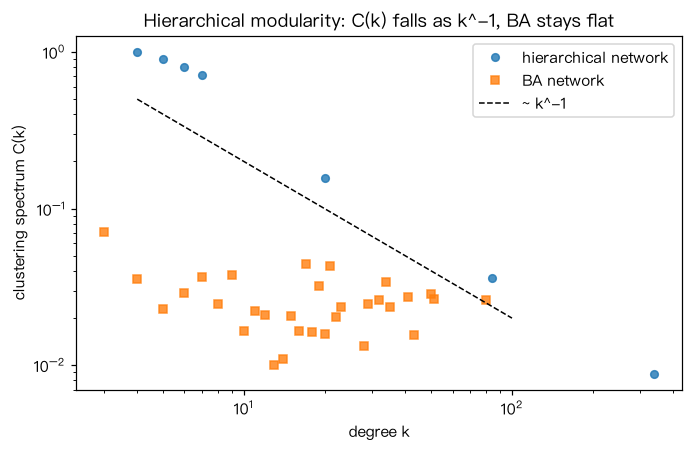
聚集谱 C(k) 与层次模块网络（Ravasz–Barabási 型确定性模型）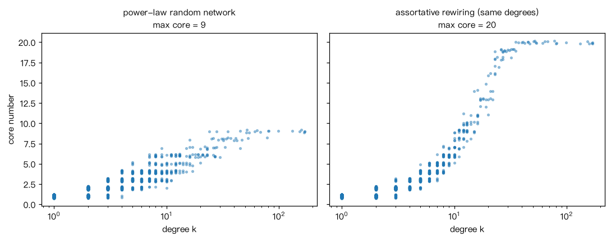
k-核分解——手写剥离算法并与 NetworkX 对照，比较核数与度 度相关如何改变巨连通分支、传播阈值与可同步性
度相关如何改变巨连通分支、传播阈值与可同步性 阈值化相关网络中的同配性——模块大小如何制造正的 r
阈值化相关网络中的同配性——模块大小如何制造正的 r网络构建与统计验证
 阈值敏感性——同一个相关矩阵，不同绝对阈值下的拓扑指标
阈值敏感性——同一个相关矩阵，不同绝对阈值下的拓扑指标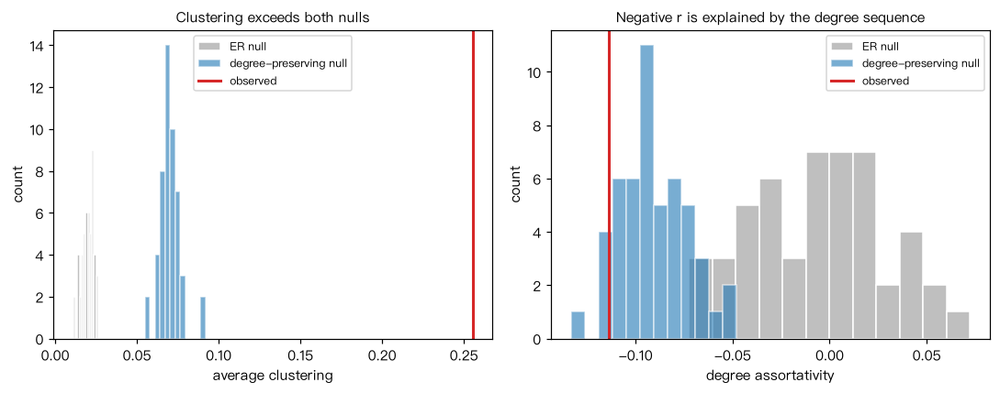
保度随机化（双边交换）零模型、z 分数与经验 p 值 置换检验比较两组网络——逐边 FDR 与基于网络的统计（NBS）
置换检验比较两组网络——逐边 FDR 与基于网络的统计（NBS）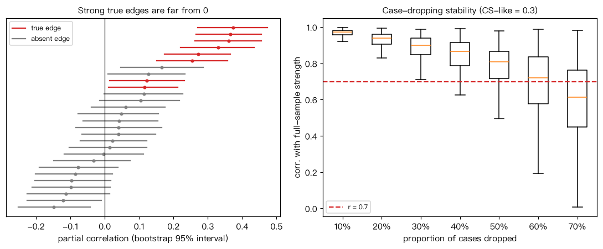
bootstrap 边稳定性与病例删除稳定性（偏相关网络） 比例阈值与密度匹配——整体连接强度差异如何“制造”拓扑差异
比例阈值与密度匹配——整体连接强度差异如何“制造”拓扑差异 样本量、Fisher z 置信区间，以及相关与偏相关的差别
样本量、Fisher z 置信区间，以及相关与偏相关的差别 从时间序列推断有向边——Granger 因果、条件 GC 与转移熵（高斯情形）
从时间序列推断有向边——Granger 因果、条件 GC 与转移熵（高斯情形） 采样网络——随机节点采样、随机边采样与滚雪球采样如何改变度分布与其他指标
采样网络——随机节点采样、随机边采样与滚雪球采样如何改变度分布与其他指标 边权不确定性向网络指标的传播——块 bootstrap、边入选概率与“指标的均值 ≠ 均值网络的指标”
边权不确定性向网络指标的传播——块 bootstrap、边入选概率与“指标的均值 ≠ 均值网络的指标”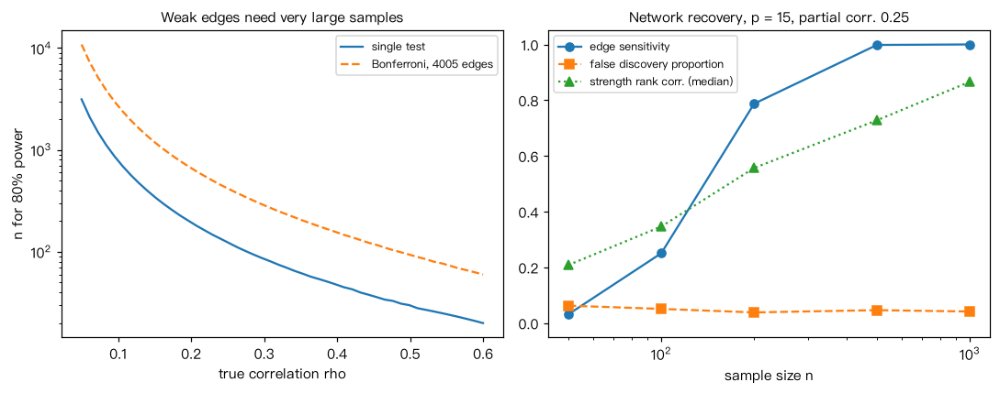
样本量与功效——单条边的解析计算、整网边恢复的模拟，以及测量信度造成的衰减 比较两张网络——已知节点对应的距离、谱距离、WL 图核，以及基于距离的置换检验
比较两张网络——已知节点对应的距离、谱距离、WL 图核，以及基于距离的置换检验Dynamics & Control网络动力学与控制
网络上的传播与免疫
 网络上的离散时间 SIR 模拟（ER 与 BA 网络对比）
网络上的离散时间 SIR 模拟（ER 与 BA 网络对比） 用度分布估计 SIR 流行病阈值
用度分布估计 SIR 流行病阈值 三种免疫策略的比较
三种免疫策略的比较 扩散中心性与独立级联
扩散中心性与独立级联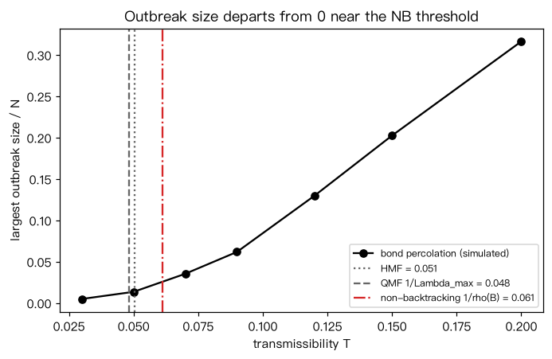
三种阈值近似的比较——异质平均场、淬火平均场与非回溯矩阵 边基仓室模型（EBCM）与精确随机模拟的比较
边基仓室模型（EBCM）与精确随机模拟的比较 活动驱动时间网络上的 SIS 阈值
活动驱动时间网络上的 SIS 阈值 集合种群模型与有效距离
集合种群模型与有效距离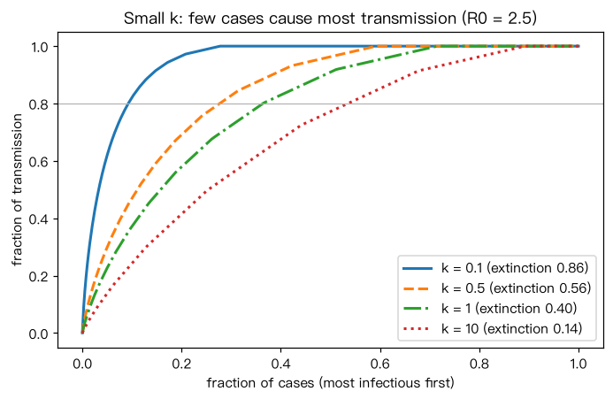
超级传播——负二项后代分布、早期灭绝与“20/80” 从发病曲线估计时变再生数 R_t（Cori 方法）
从发病曲线估计时变再生数 R_t（Cori 方法）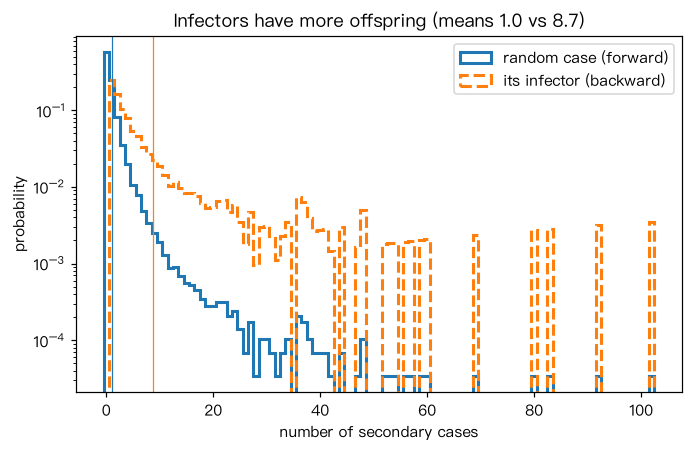
向前追踪与向后追踪——传播树中的朋友悖论 影响力最大化——贪心算法与启发式中心性
影响力最大化——贪心算法与启发式中心性 复杂传染——阈值模型在聚集网络与随机网络上的级联
复杂传染——阈值模型在聚集网络与随机网络上的级联 传播溯源——Jordan 中心与基于观测点的估计
传播溯源——Jordan 中心与基于观测点的估计


网络可控性与稳定性
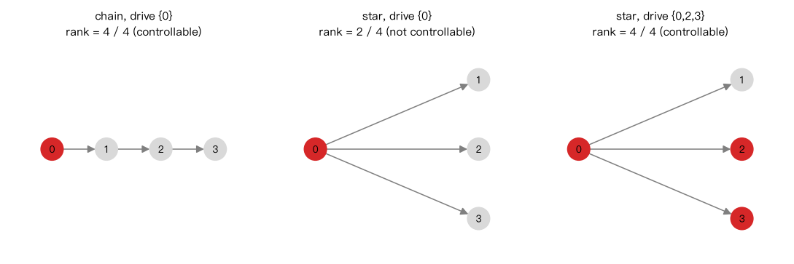
用 Kalman 秩判据检验可控性 用最大匹配找驱动节点，并用 Kalman 判据验证
用最大匹配找驱动节点，并用 Kalman 判据验证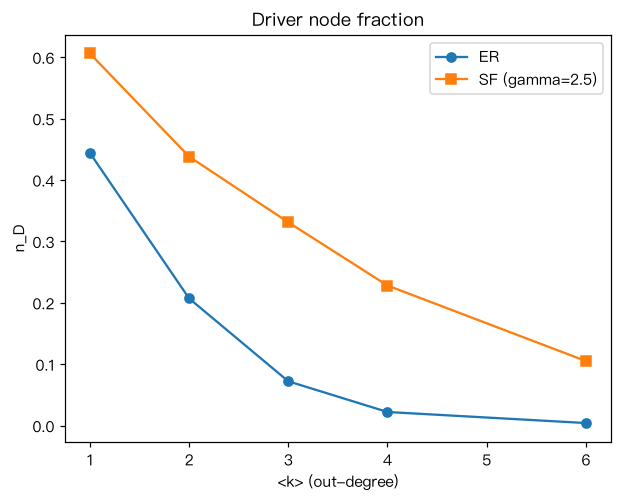
驱动节点比例与平均度、度异质性 PBH 判据与精确可控性——同一拓扑、不同权重需要的输入数不同
PBH 判据与精确可控性——同一拓扑、不同权重需要的输入数不同 控制中心性——单个节点能控制的子空间维数
控制中心性——单个节点能控制的子空间维数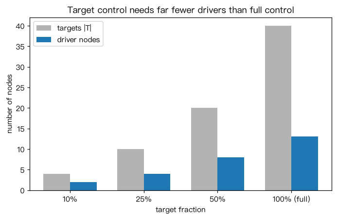
目标控制——只控制一部分节点需要多少驱动节点 控制能量、Gramian 条件数与“理论可控、数值不可控”
控制能量、Gramian 条件数与“理论可控、数值不可控” 平均可控性与模态可控性（Gu 等 2015 的离散时间定义）及其与度的关系
平均可控性与模态可控性（Gu 等 2015 的离散时间定义）及其与度的关系 可观测性——根强连通分支与最少观测节点
可观测性——根强连通分支与最少观测节点 反馈顶点集控制——锁定少数节点把非线性网络推向指定吸引子
反馈顶点集控制——锁定少数节点把非线性网络推向指定吸引子 布尔网络的吸引子与最小钉扎控制集（穷举）
布尔网络的吸引子与最小钉扎控制集（穷举） 随机失效与蓄意攻击下的结构鲁棒性
随机失效与蓄意攻击下的结构鲁棒性Brain Networks & Connectomics脑网络与连接组


Symptom Networks & Network Psychiatry症状网络与网络精神病学


Molecular & Gene Regulatory Networks分子网络与基因调控
生物分子网络与拓扑特征
 重尾度分布与 Jeong 式统计
重尾度分布与 Jeong 式统计 删除枢纽与随机删除对巨连通分支的影响
删除枢纽与随机删除对巨连通分支的影响 前馈环计数与保持入度/出度的随机化零模型（网络基序 Z 分数）
前馈环计数与保持入度/出度的随机化零模型（网络基序 Z 分数） 一致型 1 型前馈环（与门）的持续性检测
一致型 1 型前馈环（与门）的持续性检测 AP-MS 拉下数据的 spoke 模型与 matrix 模型
AP-MS 拉下数据的 spoke 模型与 matrix 模型 互作组补全——共同邻居（L2）与长度为 3 的路径（L3）链路预测
互作组补全——共同邻居（L2）与长度为 3 的路径（L3）链路预测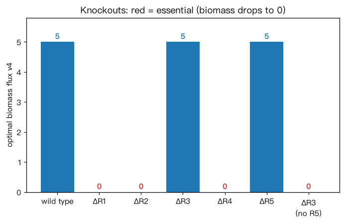
通量平衡分析（FBA）与反应敲除 负自调控加快响应；不一致型 1 型前馈环产生脉冲并加速
负自调控加快响应；不一致型 1 型前馈环产生脉冲并加速 三节点子图普查（triad census）与显著性谱
三节点子图普查（triad census）与显著性谱 马尔可夫聚类（MCL）检测蛋白复合物并与参考复合物匹配
马尔可夫聚类（MCL）检测蛋白复合物并与参考复合物匹配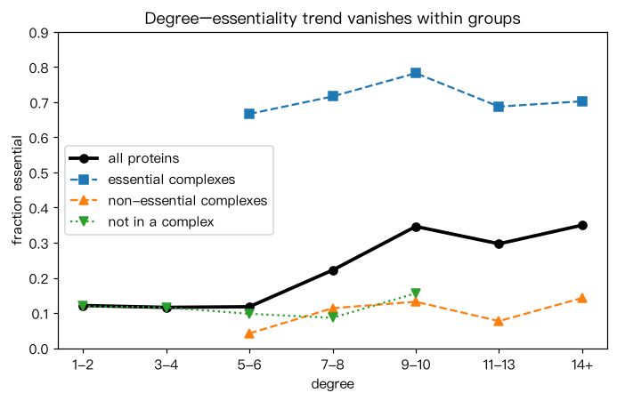
度与必需性的混杂——控制复合物成员身份后度还有预测力吗？ 差异共表达——Fisher z 检验与置换检验
差异共表达——Fisher z 检验与置换检验 相似性网络融合（SNF）整合两类组学数据
相似性网络融合（SNF）整合两类组学数据


Network Medicine & Pharmacology网络医学与药物网络


Methods & Research Practice计算方法与研究规范


研究问题、可复现分析与敏感性分析
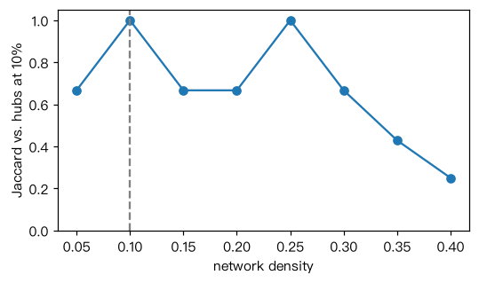
阈值敏感性——枢纽排名随网络密度如何变化 随机种子敏感性——社团划分的可重复程度
随机种子敏感性——社团划分的可重复程度 替代解释——组间差异来自“结构不同”还是“连接整体变弱”
替代解释——组间差异来自“结构不同”还是“连接整体变弱” 多元宇宙分析——把所有合理的网络构建选择组合起来同时报告
多元宇宙分析——把所有合理的网络构建选择组合起来同时报告 网络边检测的统计功效——Fisher z 近似与蒙特卡洛模拟
网络边检测的统计功效——Fisher z 近似与蒙特卡洛模拟 随机种子与蒙特卡洛误差——零模型 z 分数和置换 p 值本身也是估计量
随机种子与蒙特卡洛误差——零模型 z 分数和置换 p 值本身也是估计量 循环论证（double dipping）——用同一份数据选边又检验边
循环论证（double dipping）——用同一份数据选边又检验边{
"python": "3.15.0",
"platform": "macOS-27.2-arm64-arm-64bit-Mach-O",
"packages": {
"networkx": "3.7",
"numpy": "2.5.4",
"scipy": "1.18.1"
},
"parameters": {运行清单（provenance manifest）——记录环境、参数、种子与输入输出的哈希